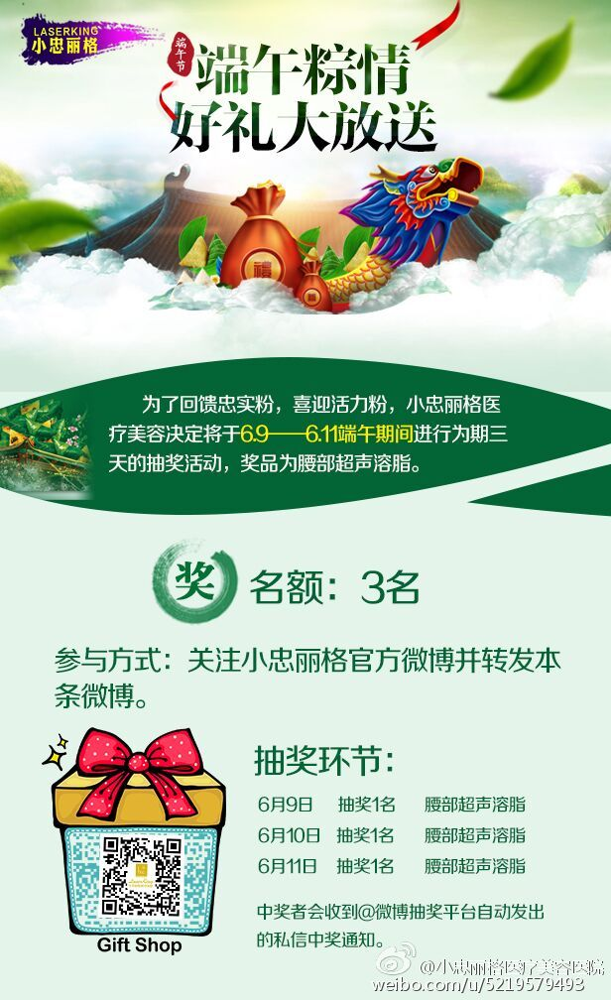

腰部超声溶脂，是一次，还是一个疗程？
@小忠丽格医疗美容:
#端午粽情好礼大放送#为了回馈忠实粉，喜迎活力粉，小忠丽格医疗美容决定将于6.9——6.11端午期间进行为期三天的抽奖活动，奖品为腰部超声溶脂。
名额：3名
参与方式：关注小忠丽格官方微博
转发本条微博
抽奖环节： 6月9日 抽奖1名 腰部超声溶脂
6月10日 抽奖1名 腰部超声溶脂
6月11日 抽奖1名 腰部超声溶脂
中奖者会收到@微博抽奖平台自动发出的私信中奖通知。
注：同时满足参与方式的两项规则才有机会中奖哦！
名额：3名
参与方式：关注小忠丽格官方微博
转发本条微博
抽奖环节： 6月9日 抽奖1名 腰部超声溶脂
6月10日 抽奖1名 腰部超声溶脂
6月11日 抽奖1名 腰部超声溶脂
中奖者会收到@微博抽奖平台自动发出的私信中奖通知。
注：同时满足参与方式的两项规则才有机会中奖哦！
- 